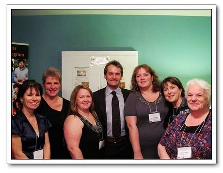

A strong feature of the micro-business program can be found in a number of key community based partnerships. The Program is funded by the provincial Department of Innovation, Business and Rural Development (IBRD) and administered by the Newfoundland and Labrador Federation of Co-operatives (NLFC). Other key partnerships exist at the regional and community level and include two delivery partners: Community Business Development Corportation Central and Community Center Alliance. Both organizations are responsible for the day-to-day activities of micro-business program delivery.

The regional Area Committees comprised of members of the business, community and municipal sectors assist in the registration of groups who can then access their respective loans to start or expand a home-based micro-business.
Community based lending organizations also provide the key financial component of the micro-business program. Group members who have successfully completed the learning modules and are eligible for loans can access and repay their loans through our two lending partners: